| 编号 | 验收项 | 状态 | 依据 |
|---|---|---|---|
| V1 | 桌面宽（1440×900）视觉：Tabs 选中态、渠道说明、两栏布局、右栏控件左缘对齐、行间分隔、长文本换行、无溢出、无重叠 | 通过 | 截图 desktop-1440-*；12 行右栏左缘 spread=0px；scrollWidth(1440)<=clientWidth(1440)；行间无交叠 |
| V2 | 中等宽（1024×800，内容宽 706px ≤860px）堆叠为单栏、无横向溢出、无重叠 | 通过 | 截图 medium-1024-*；12/12 行堆叠；scrollWidth(1024)<=clientWidth(1024) |
| V3 | 手机宽（390×844）堆叠单栏、无横向溢出、无重叠 | 通过 | 截图 mobile-390-*；12/12 行堆叠；scrollWidth(390)<=clientWidth(390) |
| T1 | 点击「飞书 IM」Tab：aria-selected=true，面板只显示飞书 IM 配置 | 通过 | tabCount=1，aria-selected="true"，panelCount=1 且仅含飞书 IM、无其他渠道关键字 |
| S1 | 修改空闲超时 30→35 并保存：出现「已保存」；刷新后保持 35 | 通过 | 截图 save-idle35-before/after.png；reload 后 input 值为 35 |
| S2 | 改回原值 30 并保存；刷新后保持 30（开发数据恢复原状） | 通过 | 保存出现「已保存」；reload 后值为 30；最终复核开关关/AppID 空/Secret 空/白名单空/无未保存修改 |
| E1 | 非法值（0）保存：字段下方错误提示截图；「放弃修改」恢复已保存值 | 通过 | 截图 invalid-idle-error.png，错误「空闲超时是 1 到 1440 之间的整数分钟。」；放弃后值回 30、错误消失、保存按钮禁用 |
| L1 | 加载态/骨架屏截图 | 未覆盖 | 本地 dev 加载过快，未能稳定观察到加载态；未伪造 |
| L2 | 空状态（无渠道/无工作空间等） | 未覆盖 | 当前页面恒含 1 个渠道 Tab；工作空间为空提示属正常文案行，非独立空状态页，未单列 |
| C1 | 浏览器 console 错误与失败请求 | 通过 | console 仅 vite 热更新握手 + React DevTools 提示，0 error/warn；XHR/fetch 137 个，0 个失败/4xx/5xx |
| P1 | 证据无凭据泄露 | 通过 | App Secret 输入框全程为空占位符；evidence 与截图不含 Secret/token |
overflow-wrap:anywhere，截图中无截断、无横向溢出。注：文档根不滚动（scrollHeight=clientHeight），滚动容器为 main；--full 截图在此壳下仅产出视口尺寸，故每宽度以顶部/底部两张视口截图覆盖全部 12 行。
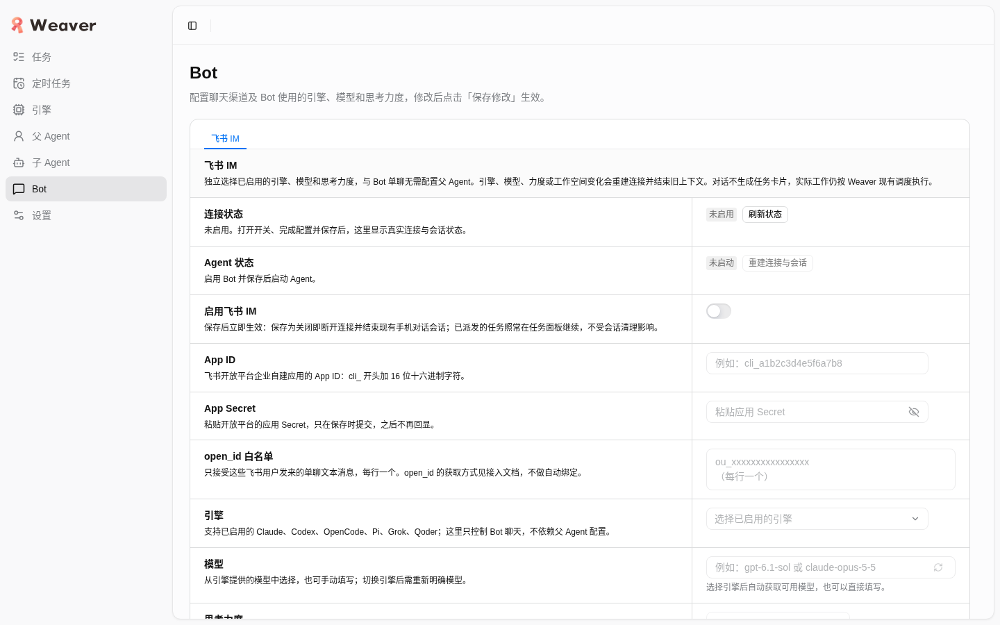
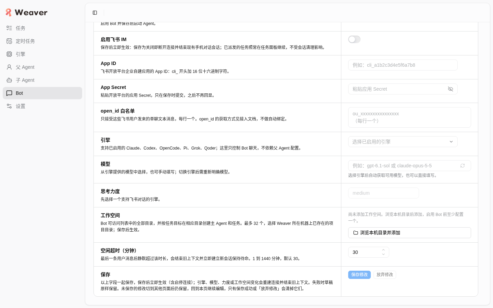
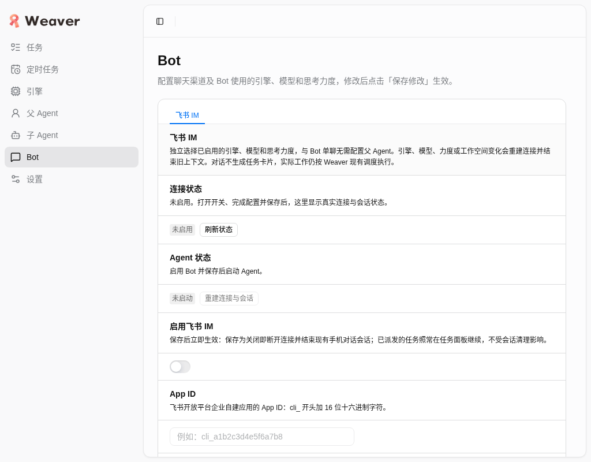
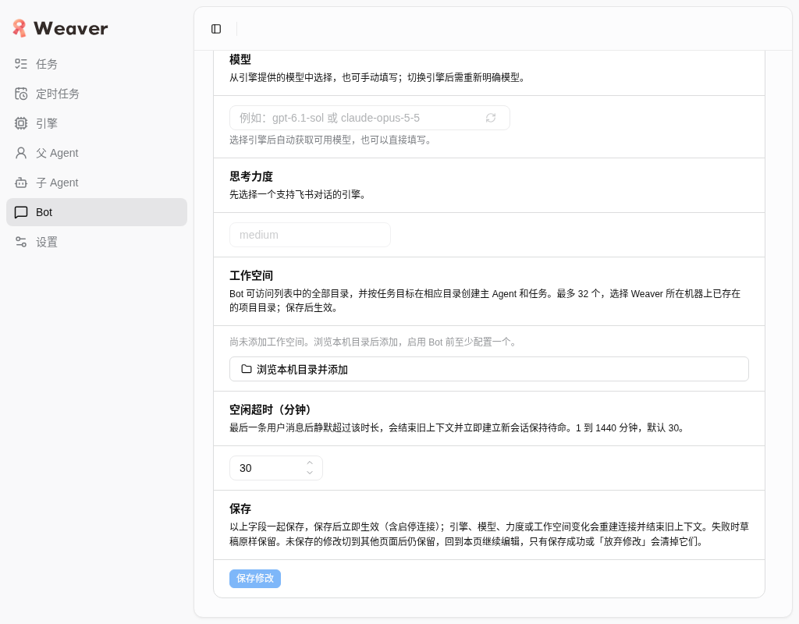
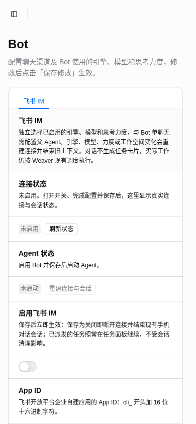
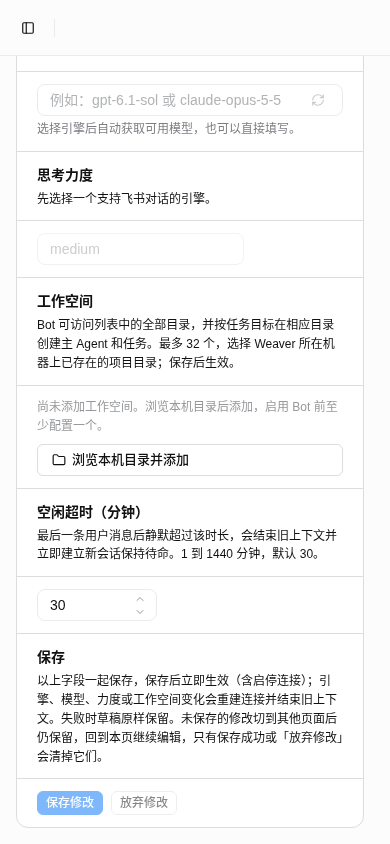
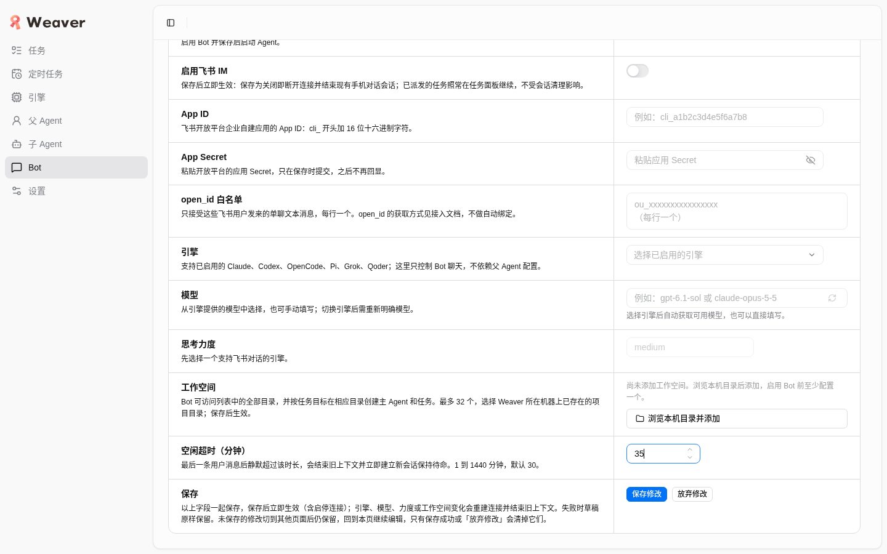
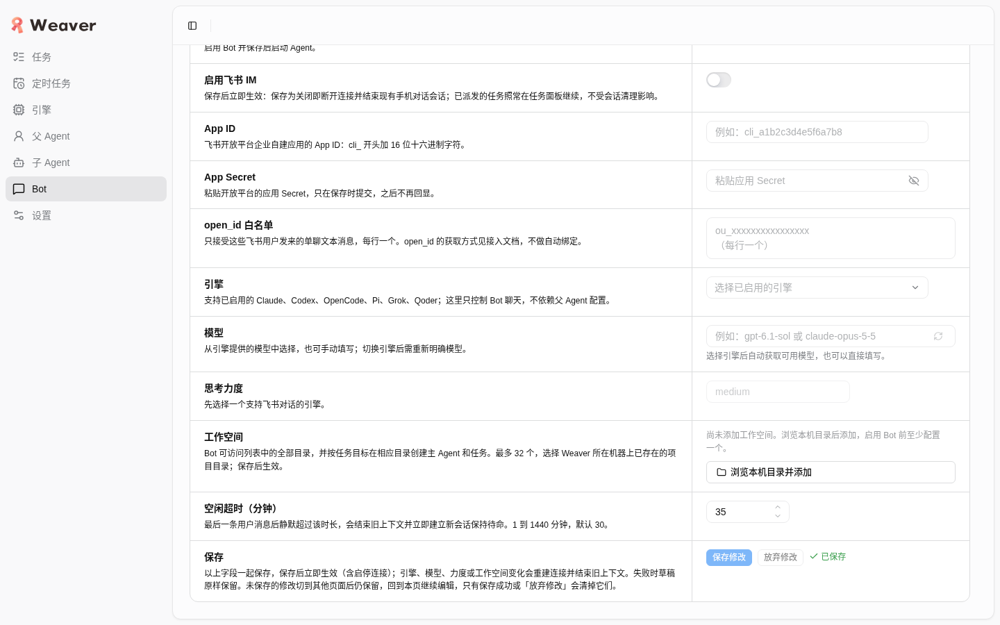
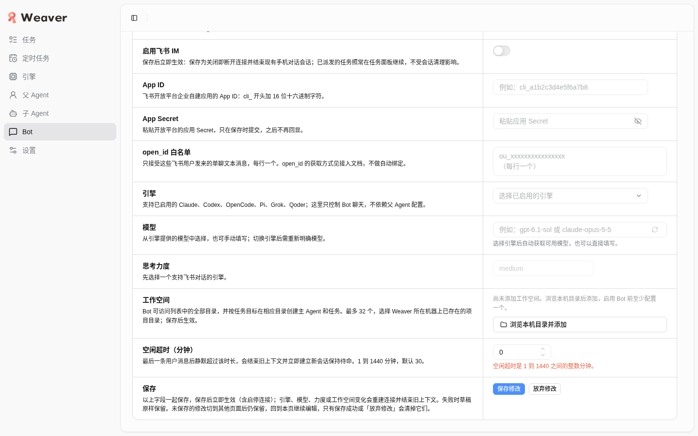
机器证据见 evidence.json（视口检测数值、保存前后数值、console/网络统计）。
tsx watch 因工作区其他未提交改动（src/main/**，其他 worker 并发编辑中）曾报 STARTUP_FAILED（缺失 chainEngines / EXCLUDED_WORKER_REASON 导出）；等待文件收敛后服务稳定，curl 连续 6 次 200，后续验收未再中断。验收未修改任何源码。~/.local/share/weaver 数据；未切换启用开关、未改 App ID/Secret/引擎/工作空间，避免真实外部连接。bot-tabs-b 已 close；任务 profile /tmp/weaver-bot-tabs/worker-b/browser-profile 已删除（bh task-profile remove）。systemctl --user stop dev-weaver-bot-tabs.scope 已执行，unit 不再存在，4738 端口已释放；4737 共享服务仍在监听，未受影响。.weaver-dev 未删除/重置；Bot 配置经 UI 确认恢复验收前值（空闲超时 30、白名单空、开关关、AppID/Secret 空、无未保存修改）。临时文件已清理（仅保留本报告目录）。变更：BotChannel header 删除重复的粗体渠道标题，只保留渠道说明文字；section 继续保留 aria-label="飞书 IM"；header 的背景、内边距、下边框不变，仅去掉单子元素后不再需要的 gap。亮色主题、只观察未改任何 Bot 配置。
| 视口 | 结论 | 依据 |
|---|---|---|
| 桌面 1440×900 | 通过 | Tab 下方 header 仅为渠道说明（不含「飞书 IM」），section aria-label 仍为「飞书 IM」；document 1440<=1440、main 1172<=1172，无横向溢出 |
| 手机 390×844 | 通过 | Tab 下方 header 仅为渠道说明（不含「飞书 IM」），section aria-label 仍为「飞书 IM」；document 390<=390、main 380<=380，无横向溢出，单栏堆叠 |
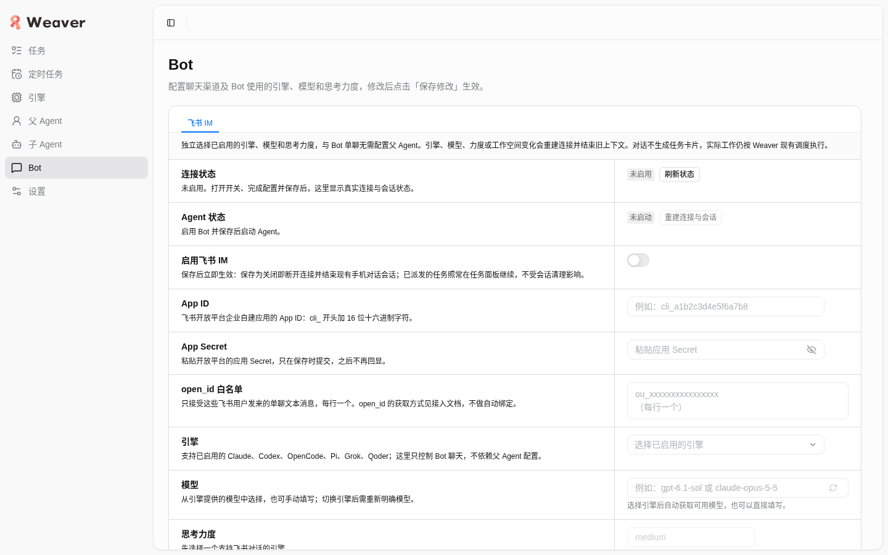
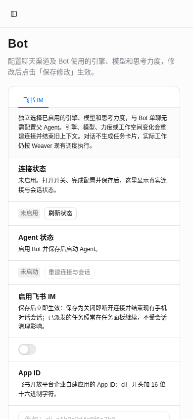
单元测试：新增 header 去重渲染测试，先失败后通过；tests/renderer/renderer-im-settings.test.ts 38 项全过；npm run typecheck exit=0。机器证据见 evidence.json 顶层 polish 字段。